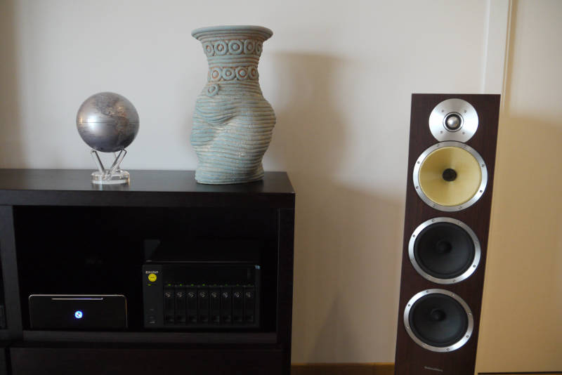

Hi everyone 
I'm very proud to show you our HTPC for home entertainment, mainly "XBMC", and for domotic controller, obviously "OpenRemote"

For curios people see this post:
http://forum.xbmc.org/showthread.php?tid=159927&pid=1372224#pid137222
The OpenRemote controller is SUPERFASTER 
My iPhone OpenRemote Panel has the following features:
7 Groups
20 screens with sensors, buttons, pictures, tab bar, tab bar item
75 items
I share with you all my TEST.
TEST HARDWARE/SOFTWARE with OpenRemote controller 2.0.2:
1) HTPC OS LINUX UBUNTU 12.10,
\*MOBO: AsRock Z77E-ITX Socket 1155 Intel Z77 DDR3 SATA3 USB3 Wifi MiniITX
\*CPU: Intel Core i3-3225 Dual-Core 3.30GHz Socket 1155 3MB Ivy Bridge 55W
\*GPU: HD4000
\*RAM: DDR3 Corsair Vengeance Blue CML16GX3M2A1600C10B LowPr. 16GB (2x8GB) PC3-12800
\*SSD: SanDisk Extreme 120GB Lettura 550MB/s Scrittura 510MB/s SATA3 2.5" Retail
jdk6, wired, dhcp,eibnetmux
ALL OK, just 2/3 seconds to load the panel, SUPER FASTER 
TEST HARDWARE/SOFTWARE with OpenRemote controller 2.0.1:
1)NEWEST TEST: On PC Intel(R) Celeron(R) CPU 2.40GHz, 32 bits, clock 100MHz,
System Memory size: 256MiB capacity: 2GiB, HD ATA Disk Seagate size: 37GiB (40GB), jdk6, wired, dhcp,
ALL OK, just few seconds to load the panel, with or without pictures ; the wait is acceptable at the first loading.
2) On MacBook PRO with MacOS 10.6.2,jdk6, wifi (not wired, dhcp):
ALL OK, just few seconds to load the panel, with or without pictures ; the wait is acceptable at the first loading.
3) On NAS QNAP TS-859+ PRO, jdk6 or jdk8, eibnetmux, wired, static ip
The loading panel is very slow, much faster without pictures and with jdk8.
4) On Raspberry PI, wired, static ip, eibnetmux,
Raspberry is very nice, is a great idea but for my panel is too slow; very very very slow.
Is much faster with jdk8, and a panel with one or few screens.
5)On windows xp, Linux on VMware; wifi or wired, static ip, jdk6, eibnetmux
The loading panel is slow, faster without pictures but not acceptable for a "rich" or "heavy" panel.
PS: Just one thing;, the webconsole is still NOT Working, I appreciate any suggestion... any news on it ?
the same problem in 4 different machine and OS  I can't understand what I do Wrong
I can't understand what I do Wrong 
{kind=link}
{kind=link}